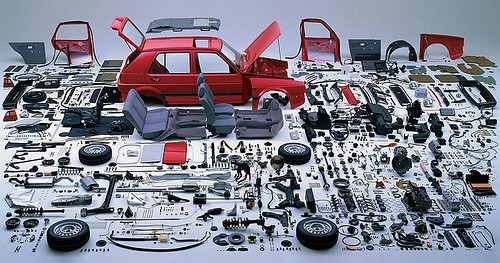

Reparatie
Is je auto toe aan een reparatie? Kies voor AutoTech Maarssen! We hebben een ruime ervaring met alle merken en modellen. Er werken gecertificeerde monteurs met uitgebreide technische kennis en we gebruiken hoogwaardige onderhoudsproducten.
Helaas kan het altijd gebeuren dat uw auto defect gaat en gerepareerd moet worden, dit kan bijvoorbeeld vroegtijdig tijdens een onderhoudsbeurt ontdekt worden. Het kan ook gebeuren dat uw auto vreemde geluiden gaat maken of dat er een storingslampje gaat branden, kom bij twijfel altijd even bij AutoTecht Maarssen langs en wij kijken wat er aan de hand is. Wij werken zeer transparant, dat wil zeggen dat wij u altijd vooraf vertellen en laten zien wat er aan de hand is en wat wij daaraan kunnen doen. Ook krijgt u bij AutoTech Maarssen altijd een prijsopgave vooraf zodat u niet achteraf voor verassingen komt te staan.
